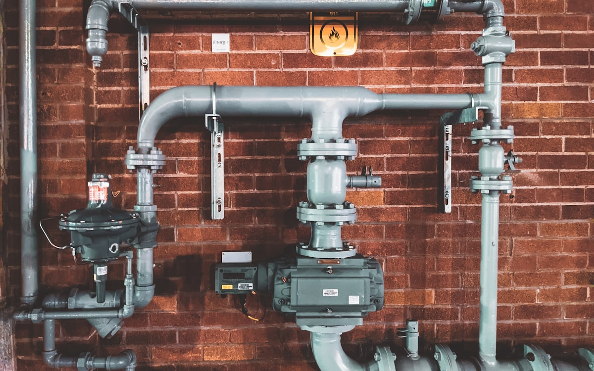

Not every job is a new boiler or a full bathroom. Most days we're sorting the everyday plumbing problems that every Limerick home throws up sooner or later — a tap that won't stop dripping, a toilet that runs all night, a hot water cylinder that's lost its puff, low pressure in the upstairs shower, a radiator that won't heat. None of these are exciting, all of them are easy to put off, and all of them quietly cost you money or aggravation until they're fixed.
What's included
- Leak detection and repair — visible and hidden
- Tap replacements (kitchen, bathroom, garden)
- Toilet repairs and full unit replacements
- Hot water cylinder repairs and replacements
- Immersion heater fitting and fault diagnosis
- Water pressure issues — diagnosis, pumps, pressure-reducing valves
- Radiator bleeding, replacement, and repositioning
- Outside taps, garden plumbing, washing machine fits
- Stopcock and isolation valve installs (recommended for every home)
Common plumbing jobs we do every week in Limerick
These are the calls we get over and over — and most are quick fixes.
Dripping tap
Almost always a worn cartridge or washer. €60–€90 fitted in most cases. Don't ignore it — a single dripping tap wastes about 60 litres of (usually heated) water a week.
Running toilet
Either the inlet valve is sticking or the flush valve is leaking. Quick parts replacement, usually €70–€110.
Low water pressure
Could be the mains, the cylinder, a stopcock half-shut for years, or a partially-blocked pipe. We diagnose first, fix second.
Hot water issues
Hot but not very hot? Cylinder thermostat or immersion. No hot at all? Boiler or cylinder. We sort all of it.
Cold radiator at the top
Air in the system. Bleed it. If it keeps happening, you've got a bigger issue (usually a microleak or a sludge problem).
Burst flexible hose under the sink
Common in Limerick kitchen units — flexis fail with age. €50–€80 to swap. While we're there, we'll often fit isolation valves so you can change taps yourself in future.
How much does a Limerick plumber cost?
Standard call-out (Mon–Fri daytime, Limerick city and surrounding areas): €85 first hour, then €65 per hour after that, plus parts at honest cost. Most general plumbing jobs (taps, toilets, leaks) are completed inside the first hour. We don't charge a separate "call-out fee" on top — the first hour includes the visit. Quotes are always given before work starts.
Why a small plumbing fix today saves a big one later
Plumbing problems compound. A slow leak under a sink rots the unit and the floor. A failing flexi-hose eventually bursts when you're at work. A cylinder limping along eventually fails on a Sunday. Most of the emergency call-outs we run could have been a €90 daytime fix the previous month. If something doesn't seem right, get it looked at — we're rarely the most expensive part of a problem caught early.
Frequently asked questions
Do you do small jobs?
Yes — there's no minimum. A €70 tap swap is just as welcome as a €5,000 bathroom. Lots of our long-term customers started with us on a small job.
Will you give me a fixed price over the phone?
For straightforward jobs (tap swap, toilet repair, single radiator) — usually yes. For anything that needs eyes on (leaks, pressure issues, hidden problems) we'll come out, look, and quote in writing before starting.
Do you fit customer-supplied parts?
We do, with one caveat: we can't warranty the part itself if it fails (the warranty is between you and the supplier). For high-stress items like shower valves and taps, we usually recommend you buy through us — we get trade prices and stand over the part.
How long do I wait for a non-emergency appointment?
Usually 2–5 working days. Same week, almost always.
What areas do you cover for general plumbing?
Limerick city and county is our main patch. Most of Clare (especially Ennis, Shannon, Newcastle West). Adare, Nenagh and parts of north Tipperary. Outside that, ring us — we'll do our best.
Areas we cover for general plumbing
We cover all of Limerick city and county, most of Clare and into north Tipperary. Some popular areas: